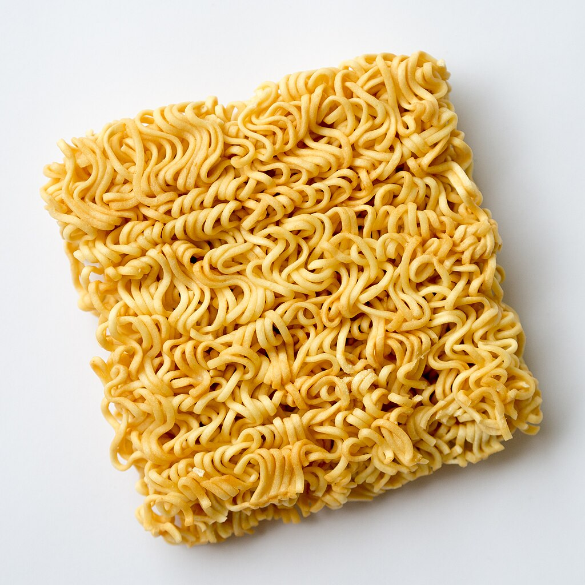

KIIRNUUDLID HAPUKOOREGA

| Koostisosad |
kogus |
| kiirnuudlid |
1 pakk |
| hapukoor |
1 plörts |
| kuum vesi |
250ml |
- Samm 1
raputa nuudlitele maitseaine ja õli, vala peale kuum vesi, ja kata kauss.
- Samm 2
oota 2-10 minutit
- Samm 3
sega ja soovikorral vala vett vähemaks. Lisa plörts hapukoort ja naudi!
Allikad:
Nuudlid